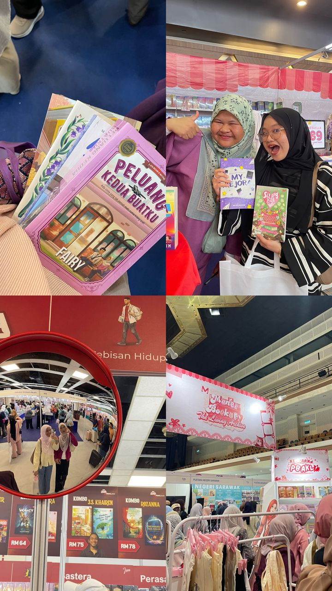
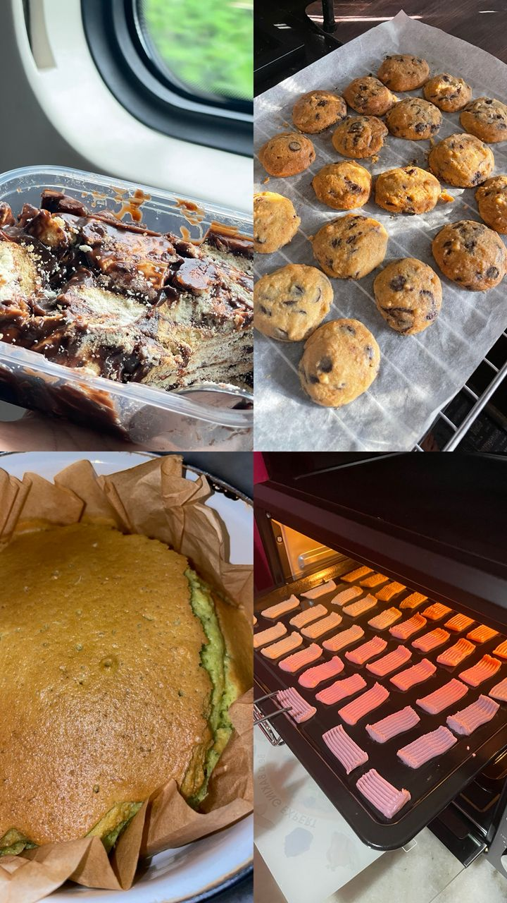

Reading has been one of my favorite hobbies since I was three years old. I enjoy reading romance, fantasy, and comedy books, and recently I have started exploring self-growth and personal development genres. I read both physical books and e-books, and I enjoy collecting them as part of my growing personal library. Reading helps me relax, learn new things, and expand my imagination.

I enjoy baking cakes and cookies for my beloved family and friends. Here is one of my creations:
